Séance 2
- Approfondissement des fonctions cosinus & sinus
- Introduction de la notion de phase
- Approfondissement du spectre et de la STFT : magnitude et phase, utilisations créatives
Unité d'angles :
- degrés (°) : cycle entre entre 0 et 360 (unité usuelle)
- radians (rad) : entre 0 et 2π (rayon du cercle)
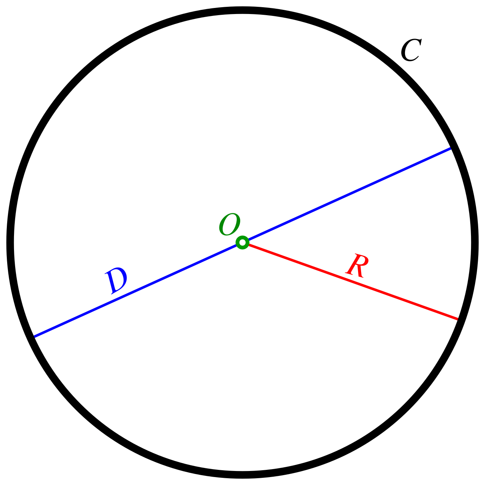
périmètre du cercle C:
angle en radian : longueur
pair
impair

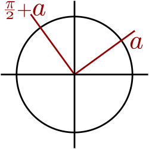
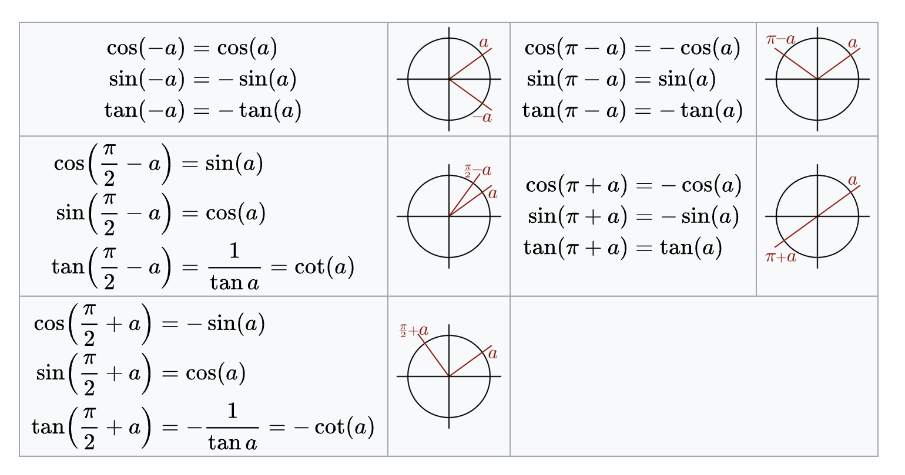
Unité de fréquences :
- fréquence (Hz): inverse de la période en s
- pulsation: 2π * fréquence
Équation d'une onde pure de fréquence f :
La notion de phase est très importante pour les ondes.
La phase représente le "décalage temporel" de cette onde par rapport à une référence (en général par rapport à la phase nulle)
Équation d'une onde pure de fréquence f :
Équation d'une onde pure de fréquence f et de phase 𝜑
... que se passe-t-il pour des ondes quand a et b sont très proches?
(𝛿 petit)
si
si inférieur à 20Hz, ça devient une modulation d'amplitude!
𝛿 : différence entre et
... pas que des délires mathématiques! ça a influence fondamentale sur l'acoustique et la musique
annulation de phase
superpositon d'ondes de même fréquence en opposition de phase (𝜑=90°;𝜋 rad)
attenuation, voir suppression d'amplitude
battements
superposition d'ondes de fréquences proches
apparition d'une onde de fréquence égale à la moyenne des deux fréquences, modulée par une onde de basse fréquence (LFO)
implications directes : mixage stéréo

left
right
mid
mid
side
implications directes : mixage stéréo
left
right
mid
mid
side
annulation de phase!
implications directes : mixage live

déphasage pour scènes profondes : demo
le bon côté des choses : le contrôle actif

musique

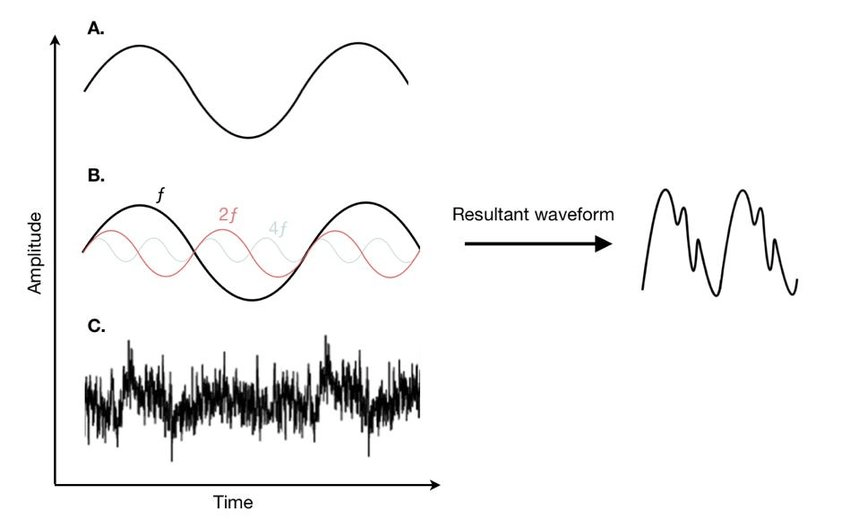
bruit
ambiant
+ bruit ambiant en opposition de phase

transformée de fourier
magnitude
phase
demo (fft)
demo (stft)
2. Numérisation d'un signal
Définition :
Transformation d'un signal analogique, dont les variations sont continues, en une suite de valeurs discrètes
Continu - Discret
ce qui est d'un seul tenant
ce qui module avec tous les degrés intermédiaires
ce qui est composé de valeurs distinctes séparées les unes des autres
Discret
ensemble dénombrable de valeurs
Continu
ensemble indénombrable de valeurs
ensemble des nombres réels
ensemble des nombres complexes
[ ]
[ ]
[ ]
...

Continu
sympa mais pas sympa
Discret
ensemble dénombrable de valeurs
Continu
ensemble indénombrable de valeurs
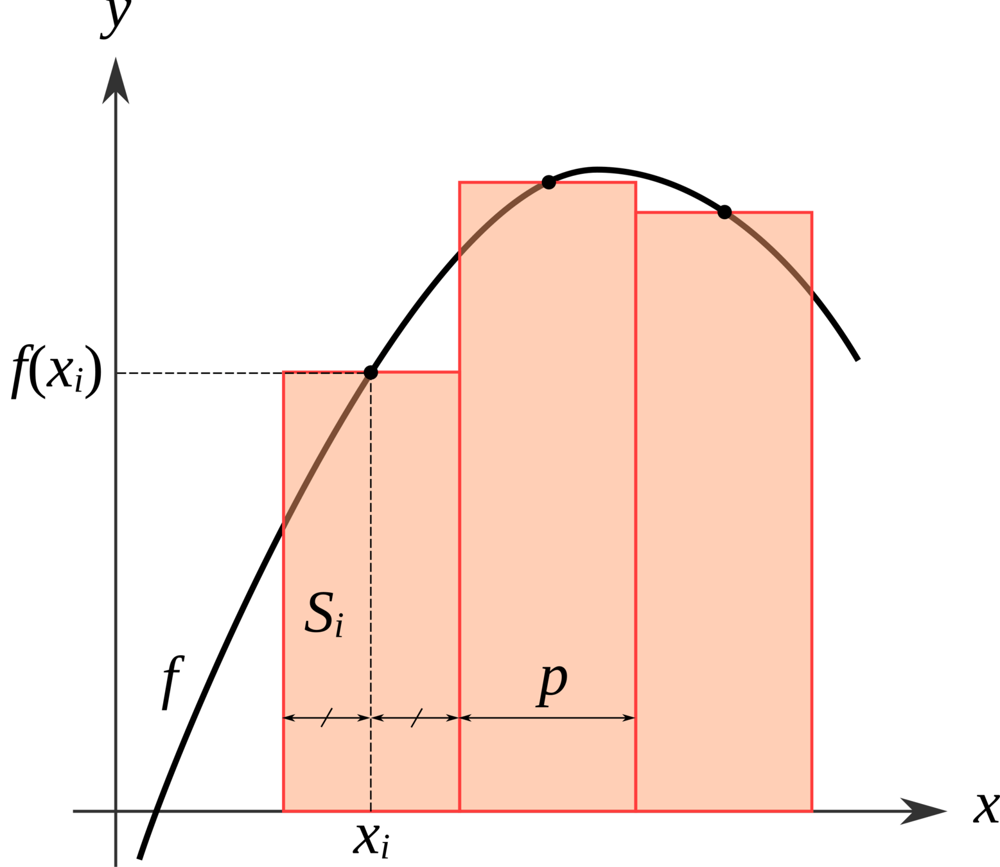
1
2
3
somme discrète
1
2
3
intégration ~ somme continue
2. Numérisation d'un signal
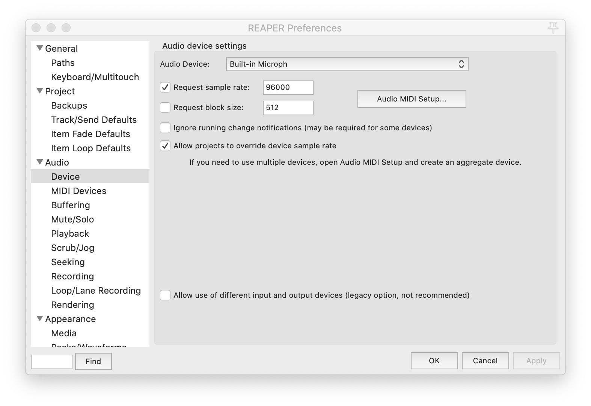
2. Numérisation d'un signal
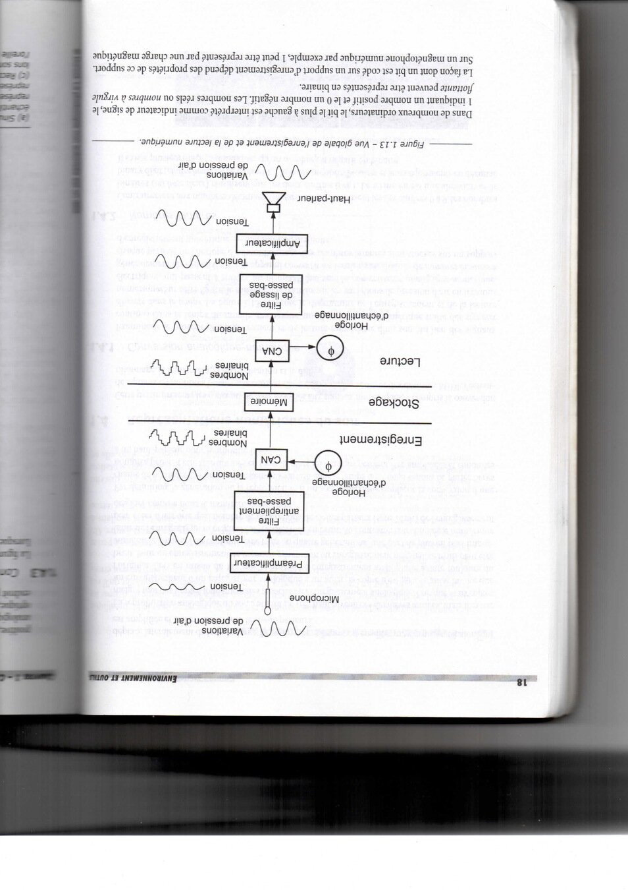
2. Numérisation d'un signal
ADC : analog to digital converter
CAN : convertisseur analogique-numérique
DAC : digital to analog converter
CNA : convertisseur numérique-analogique
2. Numérisation d'un signal

Échantillonnage
Denis Mercier, Livre des techniques du son, p.420
2. Numérisation d'un signal
A) Échantillonnage :
2. Numérisation d'un signal

discrétisation temporelle : échantillonage
2. Numérisation d'un signal
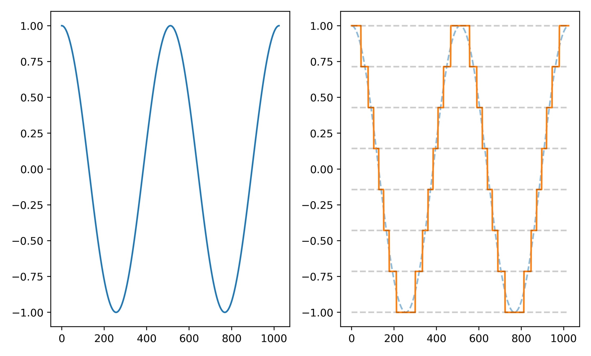
discrétisation d'amplitude : quantification
effet principal de l'échantillonage temporel :
le repliement
2. Numérisation d'un signal
A.2) Phénomène de repliement (aliasing) et incertitudes2. Numérisation d'un signal
ambiguité de l'échantillonage
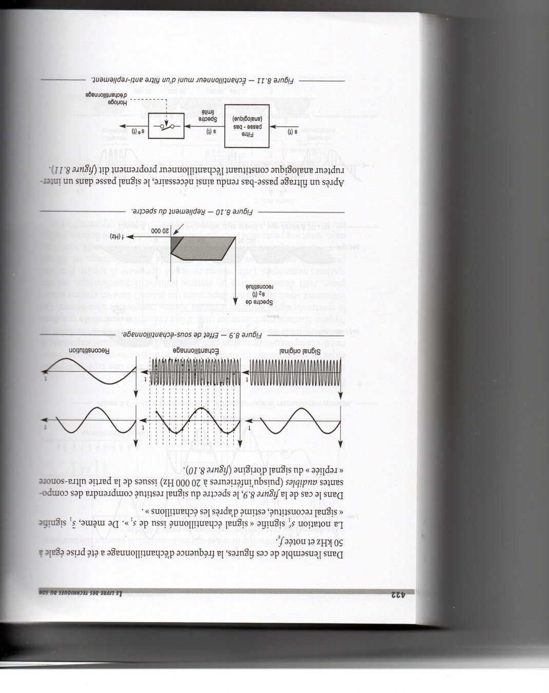
2. Numérisation d'un signal
repliement
2. Numérisation d'un signal
Théorème d'échantillonnage de Shannon-Nyquist :
Trad. de Claude Shannon dans "Communication in the Presence of Noise" 1949
Un signal continu peut-être intégralement décrit en prélevant des échantillons à intervalles réguliers à une fréquence au moins deux fois supérieure à la fréquence de la composante la plus élevée du signal.
Si une fonction f(t) ne contient aucune fréquence supérieure à W Hz, elle est entièrement déterminée par la valeur de ses ordonnées à une série de points espacés de 1/2W secondes.
2. Numérisation d'un signal
2. Numérisation d'un signal
On appelle cette fréquence la fréquence de Nyquist, la fréquence maximale enregistrable à une fréquence d'échantillonnage Fe (sampling rate en anglais).
fréquence de Nyquist
fréquence d'échantillonage
2. Numérisation d'un signal
En audio, il faut donc choisir une fréquence d'échantillonage qui est le double de la fréquence maximum qu'on veut numériser

Fréquences d'échantillonages usuelles :
- 44100 Hz : norme audio (format CD)
- 48000 Hz : norme audio / vidéo ou formats US
- 96000 Hz : norme "audiophile" (mais pk donc??)
2. Numérisation d'un signal

on filtre le signal avant numérisation pour éviter que les fréquences se replient pendant la numérisation !
2. Numérisation d'un signal
A.3) Filtre anti-aliasing : Filtrage analogique
Réalité :
Difficulté de réalisation, nécessite un filtre analogique d'ordre 13 minimum. Très difficile à réaliser sans "ripples" et très cher.


voir Max "spat5.filterdesign.chebyshev.maxhelp"
2. Numérisation d'un signal
A.3) Filtre anti-repliement (anti-aliasing) :
- Filtrage analogique
- Filtrage numérique
- OverSampling / Delta Sigma
2. Numérisation d'un signal
A.4) Sur-échantillonnage (oversampling)

2. Numérisation d'un signal
A.4) Sur-échantillonnage: Filtrage numérique

voir Plugin Doctor "fabfilter Pro Q 3"
Simple à réaliser, il peut atteindre facilement des ordres élevés. Il peut induire beaucoup de latence.
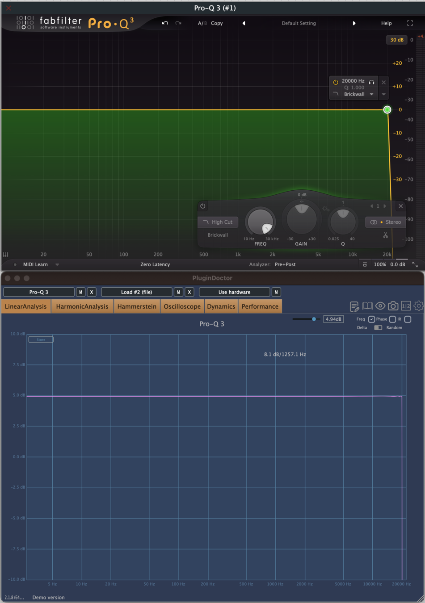
2. Numérisation d'un signal
A.4) Sur-échantillonnage (oversampling)voir Max "spat5.filterdesign.chebyshev.maxhelp"
à 48 kHz = 0.8dB
à 96 KhZ = 3.8 dB
à 128x24kHz = 19 dB
2. Numérisation d'un signal

2. Numérisation d'un signal
B) Quantification :
Action de calculer, de façon automatique, des valeurs numériques discrètes multiples d'un quantum, correspondant à une grandeur physique
CNRTL
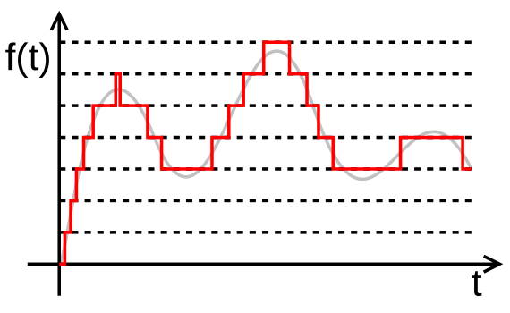
2. Numérisation d'un signal
Système de numération base 10 (décimal)
Système de numération base 2 (binaire)
Système de numération base 16 (héxadécimal)
2. Numérisation d'un signal
2. Numérisation d'un signal
B.2) Multiplet et unitésBinary digIT: Bit (b)
Octet (o)
= 8bits
Bytes (B)
Généralement =8bits
| Kilo | Méga | Giga | Tera |
|---|---|---|---|
| 1000 | 1 000 000 | 1 000 000 000 | 1 000 000 000 000 |
2. Numérisation d'un signal
B.3) Quantification en bits entiers :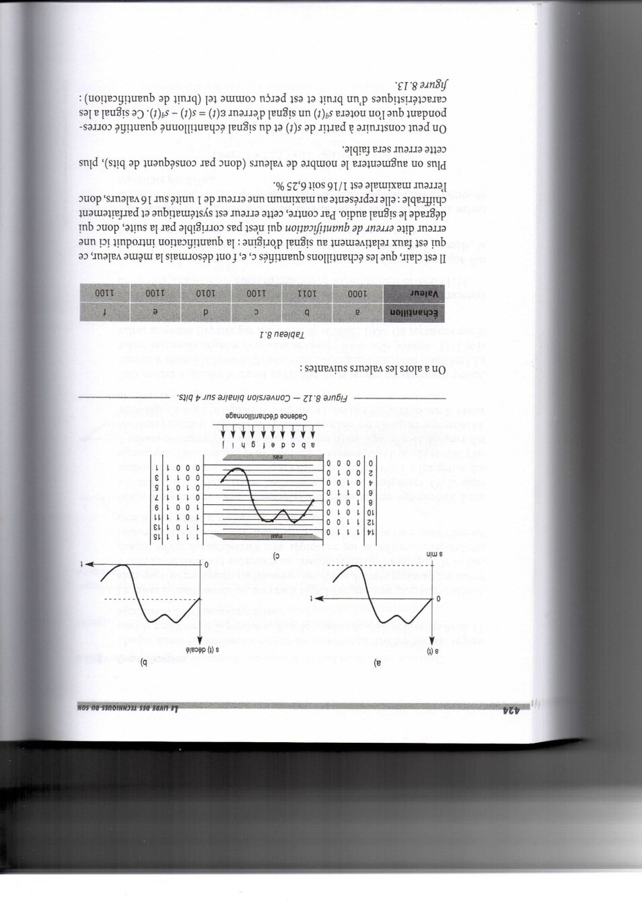
2. Numérisation d'un signal
B.3) Quantification en bits entiers :Pour n bits, on a valeurs
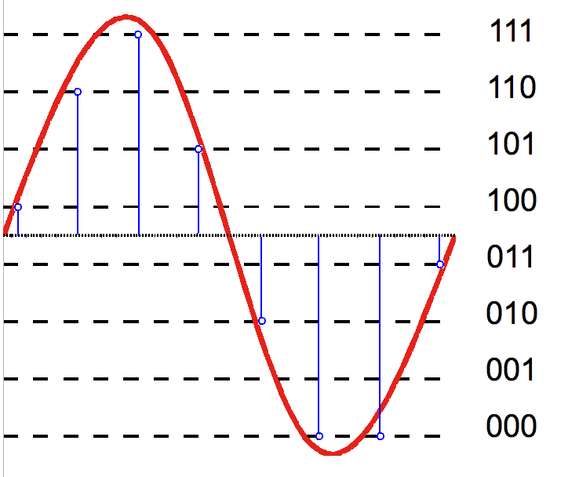
2. Numérisation d'un signal
B.3) Quantification en bits entiers :Le code binaire signé est obtenu en rajoutant un bit de signe devant le MSB au code binaire
naturel. Pour un bit de signe nul, le nombre est positif, il est négatif pour un bit égale à un. Le code binaire signé est peu propice aux opérations arithmétiques. Le code complément à 2 correspond au code binaire naturel pour les positifs, et à 2^n - A pour les négatifs


Pour n bits, la valeur maximale absolue est :
2. Numérisation d'un signal
B.8) Quantification à bit flottant :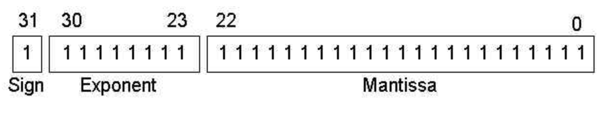
2. Numérisation d'un signal
B.4) Erreur de quantification & bruit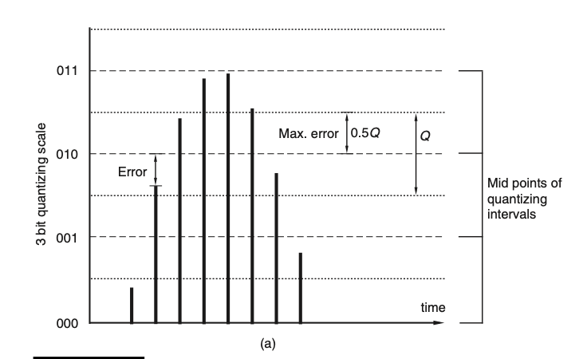
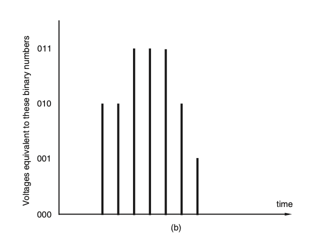
2. Numérisation d'un signal
B.4) Erreur de quantification & bruit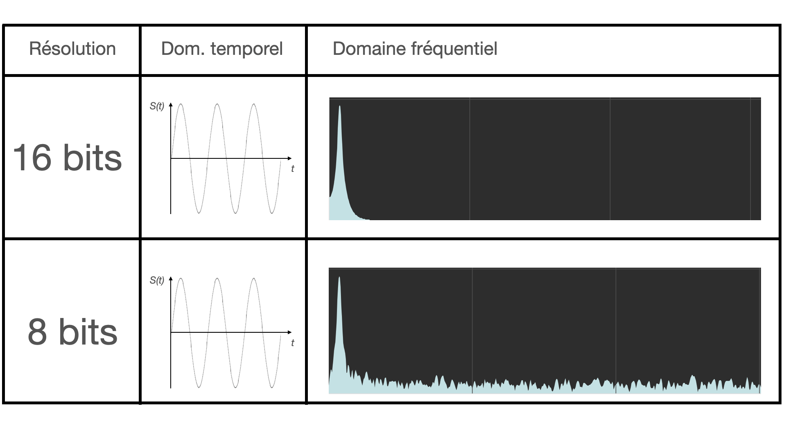
2. Numérisation d'un signal
B.5) Rapport signal sur bruit (RSBn)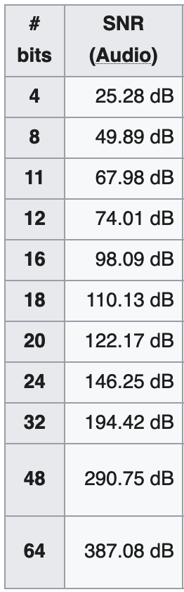
2. Numérisation d'un signal
B.6) Distortion harmonique et dithering
2. Numérisation d'un signal
B.6) Distortion harmonique et dithering
2. Numérisation d'un signal
B.7) Quantification non-uniforme :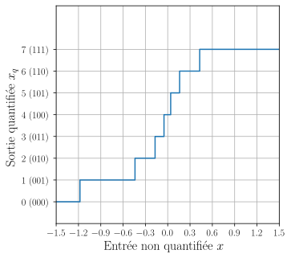
Dans certaines applications, le signal présente rarement de grandes amplitudes mais il est souvent d’amplitude faible. C’est le cas des signaux de parole. Aussi, il est intéressant d’avoir une quantification où le pas de quantification est différent dans les faibles et les grandes amplitudes. En téléphonie, la « loi A » permet d’obtenir la quantification représentée.
Vincent Mazet
2. Numérisation d'un signal
C) Numérisation :